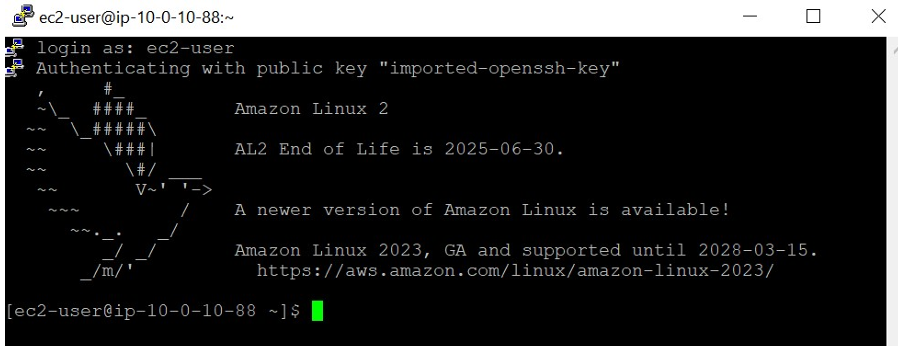
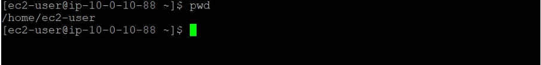
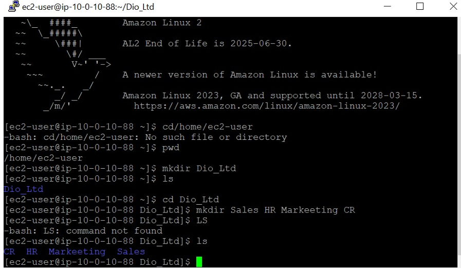
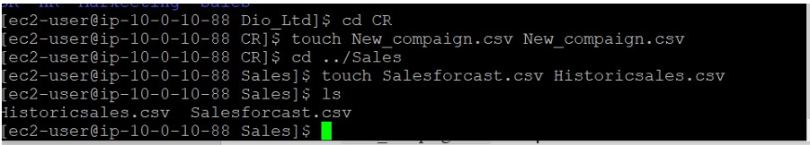
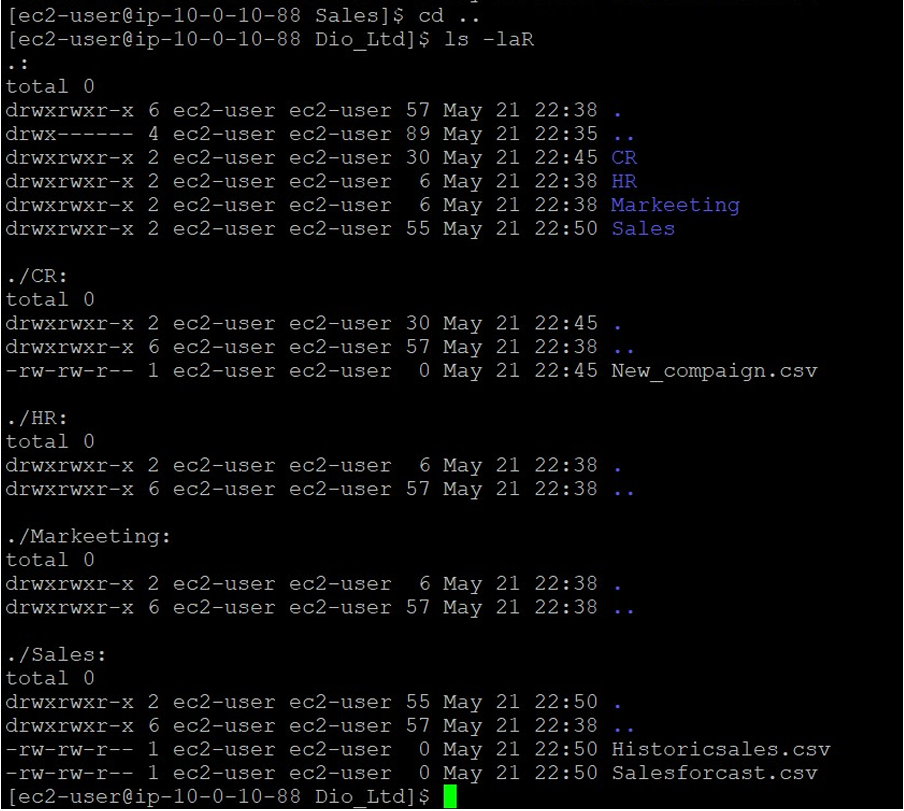
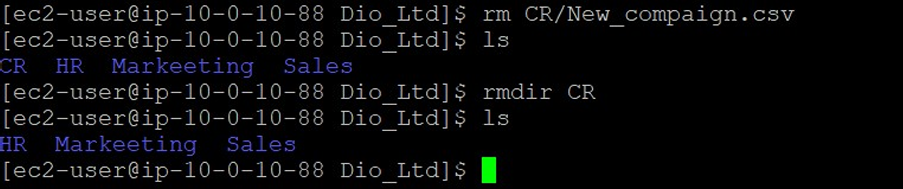
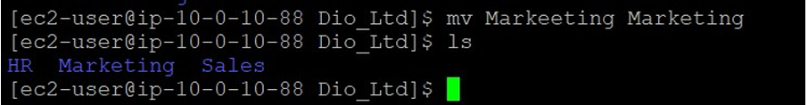

SSH into AWS Linux EC2 instance. You can read this article How to SSH into AWS EC2 instance for SSH instructions.
After successfull SSH, your Putty screen should look like below screen shot
To validate that you are in the home folder of your current user, enter pwd and press Enter. If you’re not in the home folder, enter cd /home/ec2 user
In the terminal, enter mkdir Dio_Ltd and press Enter to create the top level folder.
To change directories, enter cd Dio_Ltd and press Enter.
To create all the sub folders, enter mkdir Sales HR Markeeting CR and press Enter.
To validate that the folders were created, enter ls and press Enter.
To change your current directory to the CR directory, enter cd CR and press Enter.
To create the empty files inside the CR folder, enter touch New_compaign.csv New_compaign.csv and press Enter.
To change your current directory to Sales, enter cd ../Sales and press Enter.
To create the empty files inside the Sales folder, enter touch Salesforcast.csv Historicsales.csv and press Enter (Empty files in Marketing & HR directories can be made in similar way stated above).
To validate that the files were created, enter ls and press Enter.
To validate that all the files and folders from the Dio_ltd folder down have been created, enter cd .. to change directory to Dio_ltd and ls -laR and press Enter.
To copy the CR folder and its content to Markeeting folder, enter cp -r CR Markeeting and press Enter.
To verify that the folder and the content was copied, enter ls Markeeting/CR and press Enter.
To remove the CR folder from the Dio_ltd folder structure. You need to empty CR directory first enter rm CR/New_compaign.csv, enter rmdir CR and press Enter.
You can use move command (mv) to change folder name/fix spelling errors. To change Markeeting to Marketing use this command mv Markeeting Marketing
